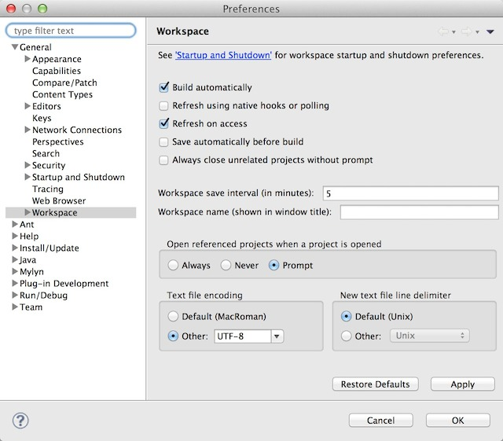
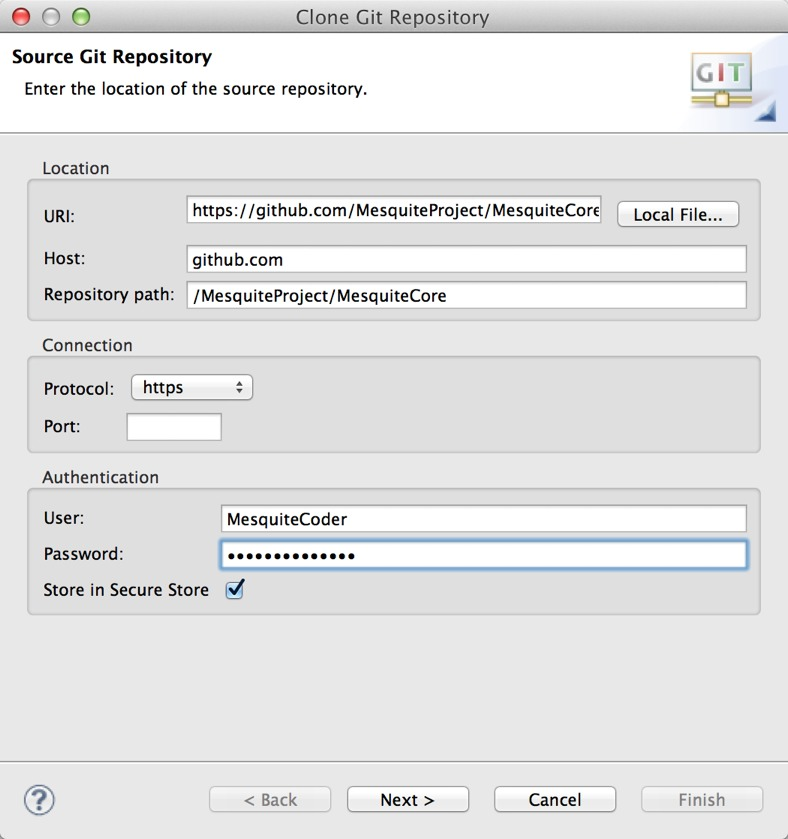

Mesquite Source Code
There are three different versions of the Mesquite source code available publicly:- source code of the official release versions of Mesquite. These are the simple, numbered versions (e.g., version 1.0, or version 3.0).
- source code of the latest interim version. Not of "official release" quality, but still considered of sufficient quality to be generally useable.
- the current, active code that is in development. This active code is less well tested, and may contain more bugs and incomplete features, but it does contain new features and may also have some bug fixes.
This page contains details on acquiring the source code, and developing your own code.
Using Eclipse for Mesquite development
We are using Eclipse as our IDE for Mesquite development, and GIT as our version control system. Here we explain how to use Eclipse to obtain and compile the Mesquite source code. This section is written for Eclipse version 4.4 ("Luna"); it will probably work generally well for subsequent versions as well. If you are using a different development environment you might skip directly to the section on GIT access.Installing Eclipse
Eclipse is an integrated development environment (IDE) that allows a programmer to organize, edit, and compile their programs. In order to get started with programming Mesquite, you should download and install Eclipse. Eclipse can be downloaded here: http://www.eclipse.org/downloads/. There are multiple download opitons at the Eclipse download site; the standard version should work just fine.Eclipse is distributed as a .zip file for Windows and as a .tar.gz file for Mac OS X and Linux. Once you have downloaded the distribution file, you will need to unzip/untar it to a location on your hard drive. Once unzipped, there will be an "eclipse" directory on your computer that contains an executable file (application) called "Eclipse" (Linux or Mac OS X) or "Eclipse.exe" (Win32x). This is the file that starts Eclipse. Move the eclipse directory to your perferred place in your hard disk; e.g., with your other applications.
Start up Eclipse or Eclipse.exe in the eclipse directory. The first time you start Eclipse, you will be presented with a Welcome screen that gives you the option to read an Overview of Eclipse or do a tutorial to teach you about Java development in Eclipse. Both are very helpful and are recommended for new Eclipse users.
Obtaining source code
The Mesquite source is available via a version control system called GIT. There are many ways of accessing a GIT repository; we use the GIT plugin that is distributed with Eclipse. To begin, you will need to go to GitHub and create your own account.
The source code for the core of Mesquite is present on GitHub in several versions:
- source code for the official releases can be found be exploring here: https://github.com/MesquiteProject/MesquiteArchive/tree/master/releases If you wish to pull down one of these versions, you should go there and find the version you want, so that you have the URL for that particular version.
- source code for the current interim release is the master branch at this URL: https://github.com/MesquiteProject/MesquiteCore.
- source code for the active development version is the development branch at this URL: https://github.com/MesquiteProject/MesquiteCore. This branch normally is a functional version of Mesquite, but on occasion it may have notable issues.
There will be other branches in the GitHub repository containing exploratory code that should in general not be trusted.
In Eclipse, do the following steps to pull the Mesquite source code onto your computer:
- First, prepare Eclipse for the Mesquite code by choosing Preferences. In the Preferences dialog box, choose General, and then from within there touch on "Workspace". Under "Text file encoding", select "UTF-8" beside "Other". Press the Apply button, and then press OK to close the Preferences dialog box.
 - Choose Window>Open Perspective>Other... and in the dialog box that appears, choose GIT
The GIT Repositories panel should now be visible. - Press on "Clone a GIT Repository". In the dialog box that appears, enter the URI for the version of Mesquite you would like to get (see addresses above) in the URI field:

Enter your GitHub user name under Authentication, and your GitHub password. Then press the Next button. - In the Branch Selection dialog box, make sure "master" (for latest official release) or "development" (for active development branch) is selected. Press Next.
- In Local Destination dialog box, check "import all existing projects after clone finishes", and press Finish.
Eclipse will now contact GitHub and download the Mesquite source to your computer. Once this is completed, you should switch back to the Java perspective where you will see a new project, called "MesquiteCore."
Given the number of classes in Mesquite, you will probably want to switch the Layout to "Hierarchical". You can do this by touching on the little triangle at the upper right of the Package Explorer panel, and choosing Layout>Hierarchical in the popup menu.
If there are problems after acquiring or pulling the latest Mesquite code
If the icon for MesquiteCore has a red x or red ! on it, then you should:- Right-click or Control-click on MesquiteCore in the Package Explorer and choose Properties.
- In the dialog box that appears:
- Under Java Compiler make sure the code compliance level is set to 1.6.
- Under Java Build Path, the Libraries tab, check to see that there is not a red X beside the JRE System Library entry. If there is, then select it, press Remove. Then press Add Library, select JRE System Library, and choose Workspace default.
Creating a Mesquite launch configuration
Eclipse needs to be configured to launch Mesquite. Follow these steps to do so:- From the main Mesquite workspace window, select the "Run" menu then select the "Run..." menu item.
- In the ensuing dialog, select "Java Application" in the left-side panel, then click the "New" button underneath the left-side panel.
- There should be a new element underneath the "Java Application" element on the left-side entitled "New_configuration". Rename this to "Mesquite" by typing in the name text field on the right hand side.
- Browse for the project and select "MesquiteCore" in the dialog that pops up.
- Browse for the Main class and select Mesquite in the dialog that pops up. "mesquite.Mesquite" show now appear in the field under "Main class".
- Click on the "Arguments" tab on the right half on the window. Near the bottom of the panel there is a section entitled "Working directory". Select the checkbox that says "Other"
- Click the "Workspace" button to browse for the working directory. Browse to and select the "Mesquite_Folder" folder underneath the main Mesquite Core directory.
- (THIS STEP IS NEEDED ONLY IF YOU ARE RUNNING WINDOWS) In order to make file opening function properly, add the following text into the VM arguments textbox above the Working Directory section:
-Dmesquite.lib.noconsoleinput=true - Now press Run (or Debug)
- You should now be able to launch or debug Mesquite whenever you wish by opening the Run (or Debug) menu, selecting the "Mesquite" item in the list and clicking the Run (or Debug) button.
Running a development copy of Mesquite outside of Eclipse
If you wish to run Mesquite outside of Eclipse (for example, by directly starting up the Mesquite file in the Mesquite Folder in Mesquite Core in your workspace), then you will need to do the following:- Find the jars.zip file that is in the Additional Files folder in the Mesquite Core folder in your workspace.
- Unzip the jars.zip file.
- Move the jars folder that is created into the Mesquite Folder in the Mesquite Core folder.
- Create and edit a classpaths.txt file so that Mesquite will know to load files in other projects.
- On Windows, if there is no Mesquite.exe in the Mesquite_Folder, then go in to the Additional Files folder, copy the Mesquite.exe file, and paste it into Mesquite_Folder.
My copy of Mesquite won't start or is missing features; why?
On occasion Eclipse will mess up the various aspects of the installation. This will cause one of two problems:- The Mesquite application won't start up at all. To fix this, unzip the file executables.zip that is contained in the Additional Files folder, and move its contents into Mesquite_Folder, replacing the existing files of the same name. On Windows, if there is no Mesquite.exe in the Mesquite_Folder, then go in to the Additional Files folder, copy the Mesquite.exe file, and paste it into Mesquite_Folder.
- The Mesquite application will start up, but it will not complete the startup process because of an error. The message given is only "Error caught in Mesquite", or something equally cryptic. Check to see if there is a jars folder in Mesquite_Folder. There may be a jars folder in Mesquite Core (outside of the Mesquite_Folder), and copying that into Mesquite_Folder may work. However, if you still encounter problems, then unzip the jars.zip file that is Additional Files, and move the jars folder that is created into the Mesquite_Folder in the Mesquite Core folder.
- The Mesquite application will start up, but some separate packages (e.g. Zephyr) that you have in your Eclipse Workspace aren't showing up within Mesquite (i.e., their features are missing). Eclipse may have thrown away your classpaths.txt file (see below); you will then need to add it back to your Mesquite_Folder.
Checking out source for other projects
Mesquite packages that are distributed separately from Mesquite (e.g., Cartographer) are organized into their own Eclipse source code projects. If you have access to some of these projects, you can also check them out from the Mesquite GitHub repositories using the same mechanism described above. You will need to find the URI for the repository. For some of the repositories, you can explore on https://github.com/MesquiteProject/ For Cartographer, the URI is https://github.com/MesquiteProject/Cartographer.Configuring Mesquite to load other projects
The class files contained in the projects other than MesquiteCore will not be found by Mesquite unless you tell Mesquite where to look. You do this by creating a "classpaths.txt" file that contains the locations of the other classes, and placing the file in the Mesquite_Folder in MesquiteCore in your Eclipse workspace. The format of the classpaths.txt file is as follows for MacOS X and Linux:../../Cartographer/Mesquite_Folder
(For Windows, use \ rather than /) This tells Mesquite to look outside of Mesquite_Folder, outside of MesquiteCore, then inside Cartographer/Mesquite_Folder. An example classpaths.txt file, as shown above, is contained in the Additional Files folder within the MesquiteCore folder in your workspace.
If you have other projects that you want Mesquite to find, add more lines. For example, if you have a separate project called MyProject, then the classpaths.txt file would look like this:
../../Cartographer/Mesquite_Folder ../../MyProject/Mesquite_Folder
It is also advisable to save a backup copy of your classpaths.txt file in another directory notunder subversion control. When updating Mesquite Project, the classpaths.txt file is sometimes deleted, so a backup copy would allow you to copy and paste the file into the Mesquite_Folder directory as opposed to creating a new classpaths.txt file every time you update your workspace.
Note: in Mesquite 3.31 and earlier a classpaths.xml file was used to house extra classpaths. This was changed to the simpler text file format shown above in version 3.4 of Mesquite.
Updating the latest source
Once you have your Eclipse workspace configured, you can update your source code to the latest that is present on GitHub. To do this,- Go to the Java perspective in Eclipse.
- Open the Package Explorer so that you can see MesquiteCore.
- Right-click or Ctrl-click on MesquiteCore and choose, from the menu that appears, Team>Pull. Eclipse will contact GitHub and pull down the latest source.
Developing your own modules
The developer's documentation explains how Mesquite works and in general how to program for it. It is incomplete and out of date, but should assist orienting you. We here describe how you can establish your own project in order to build modules within Eclipse.In order to extend Mesquite with your own analyses or tools, first check out the MesquiteCore within Eclipse as described above. For your own modules, it's best to create a separate Java project with all of your code.
To create a new Java project in Eclipse and configure it to refer to the main MesquiteCore, follow these steps:
- From the main Mesquite workspace window, select the "File" menu, select the "New" menu item, then select the "Project" menu item in the "New" submenu.
- In the "New Project" dialog, keep the default selection, "Java Project", selected and click Next.
- Type a name for your project in the "Project name:" field. This should match the name of the Mesquite package you will eventually distribute.
- In the "Project layout" area of the dialog, select the option that says "Create separate source and output folders." Click next.
- In the bottom of the Java settings dialog, click the "Browse" button next to the Default Output folder textfield.
- In the dialog that comes up select the root folder (the folder that is named as the same as your project) then click on the "Create New Folder" button. Name your new folder "Mesquite_Folder" and click "OK". In the Folder Selection dialog select the new Mesquite_Folder and click "OK".
- Click the "Projects" tab in the Java Settings dialog. Click "Add" and select "MesquiteCore" in the Required Project Selection dialog. Click Finish to create your project in the workspace.
- Expand the contents of your new project by clicking on the triangle next to it. Right click (Ctrl-click on a Mac with a single-button mouse) on the "src" folder and select the "Refactor" menu and choose "Rename." For the new name type "Source."
- Right-click on the "Source" folder, select the "New" menu then choose "Package" in the "New" menu. In the name field, start your package name with "mesquite." and finish it with whatever the name of your Mesquite feature will be. Click "Finish" to create your new package.
- You can start creating new packages and classes underneath your new package as described in the developer's documentation. We also encourage you to use existing modules as models. Remember that for a module with class name MyModule to be found by Mesquite, its immediate package needs to have the same name (i.e., the module needs to be mesquite.mypackage.MyModule.MyModule.class).
- You can test your project classes by launching Mesquite from within Eclipse as specified here. However, for Mesquite to find your class files at runtime, you need to edit the classpaths.txt file located in Mesquite_Folder in MesquiteCore in your Eclipse workspace to include the classpath of your project's class files (see above).
Contributing changes to the official Mesquite code
If you check out the MesquiteCore from the Mesquite repository, you will have Mesquite's main code base. You can make changes to this core code, if you wish. It may be the case that as you write your own modules, you will discover bugs in the main Mesquite code that need to be fixed or you will have methods that you would like to add to some of the standard classes such as DNAData. If you wish for us to consider incorporation of this code, then please submit a pull request in GitHub; please provide enough descriptive details in the pull request to help us judge the value of your modifications. If you wish to be involved more extensively, please contact us directly.Mesquite Development mailing list
You may sign up for a mailing list for discussion of Mesquite development here.Software distributed with and used by Mesquite
Mesquite uses the following pieces of software:- ByteBuddy, distributed under an Apache 2.0 license.
- BrowserLauncher by Eric Albert
- corejava.Format by Horstmann & Cornell
- iText by Lowagie & Soares.
- JAMA by The MathWorks and NIST
- JSci by Mark Hale, Jaco van Kooten and others (see Mesquite source code for details).
- The PAL library by Drummond and Strimmer is used by the GTR substitution model for DNA sequence simulations.
Mesquite Source Code License
Mesquite source code is Copyright ©1997-2017 W.P. Maddison and D.R. Maddison unless otherwise stated in a source code file itself. Mesquite is distributed under the terms of the GNU Lesser General Public Licence. The example data files ARE NOT distributed under the GNU LGPL.This open source code is provided by Wayne Maddison, University of British Columbia and David Maddison, Oregon State University, and is intended for non-commercial use only. Copyright ©2002-2009 Arizona Board of Regents on Behalf of The University of Arizona.
GNU Lesser General Public Licence
GNU LESSER GENERAL PUBLIC LICENSE Version 2.1, February 1999
Copyright (C) 1991, 1999 Free Software Foundation, Inc. 59 Temple Place, Suite 330, Boston, MA 02111-1307 USA Everyone is permitted to copy and distribute verbatim copies of this license document, but changing it is not allowed.
[This is the first released version of the Lesser GPL. It also counts as the successor of the GNU Library Public License, version 2, hence the version number 2.1.]
Preamble
The licenses for most software are designed to take away your freedom to share and change it. By contrast, the GNU General Public Licenses are intended to guarantee your freedom to share and change free software--to make sure the software is free for all its users.
This license, the Lesser General Public License, applies to some specially designated software packages--typically libraries--of the Free Software Foundation and other authors who decide to use it. You can use it too, but we suggest you first think carefully about whether this license or the ordinary General Public License is the better strategy to use in any particular case, based on the explanations below.
When we speak of free software, we are referring to freedom of use, not price. Our General Public Licenses are designed to make sure that you have the freedom to distribute copies of free software (and charge for this service if you wish); that you receive source code or can get it if you want it; that you can change the software and use pieces of it in new free programs; and that you are informed that you can do these things.
To protect your rights, we need to make restrictions that forbid distributors to deny you these rights or to ask you to surrender these rights. These restrictions translate to certain responsibilities for you if you distribute copies of the library or if you modify it.
For example, if you distribute copies of the library, whether gratis or for a fee, you must give the recipients all the rights that we gave you. You must make sure that they, too, receive or can get the source code. If you link other code with the library, you must provide complete object files to the recipients, so that they can relink them with the library after making changes to the library and recompiling it. And you must show them these terms so they know their rights.
We protect your rights with a two-step method: (1) we copyright the library, and (2) we offer you this license, which gives you legal permission to copy, distribute and/or modify the library.
To protect each distributor, we want to make it very clear that there is no warranty for the free library. Also, if the library is modified by someone else and passed on, the recipients should know that what they have is not the original version, so that the original author's reputation will not be affected by problems that might be introduced by others.
Finally, software patents pose a constant threat to the existence of any free program. We wish to make sure that a company cannot effectively restrict the users of a free program by obtaining a restrictive license from a patent holder. Therefore, we insist that any patent license obtained for a version of the library must be consistent with the full freedom of use specified in this license.
Most GNU software, including some libraries, is covered by the ordinary GNU General Public License. This license, the GNU Lesser General Public License, applies to certain designated libraries, and is quite different from the ordinary General Public License. We use this license for certain libraries in order to permit linking those libraries into non-free programs.
When a program is linked with a library, whether statically or using a shared library, the combination of the two is legally speaking a combined work, a derivative of the original library. The ordinary General Public License therefore permits such linking only if the entire combination fits its criteria of freedom. The Lesser General Public License permits more lax criteria for linking other code with the library.
We call this license the "Lesser" General Public License because it does Less to protect the user's freedom than the ordinary General Public License. It also provides other free software developers Less of an advantage over competing non-free programs. These disadvantages are the reason we use the ordinary General Public License for many libraries. However, the Lesser license provides advantages in certain special circumstances.
For example, on rare occasions, there may be a special need to encourage the widest possible use of a certain library, so that it becomes a de-facto standard. To achieve this, non-free programs must be allowed to use the library. A more frequent case is that a free library does the same job as widely used non-free libraries. In this case, there is little to gain by limiting the free library to free software only, so we use the Lesser General Public License.
In other cases, permission to use a particular library in non-free programs enables a greater number of people to use a large body of free software. For example, permission to use the GNU C Library in non-free programs enables many more people to use the whole GNU operating system, as well as its variant, the GNU/Linux operating system.
Although the Lesser General Public License is Less protective of the users' freedom, it does ensure that the user of a program that is linked with the Library has the freedom and the wherewithal to run that program using a modified version of the Library.
The precise terms and conditions for copying, distribution and modification follow. Pay close attention to the difference between a "work based on the library" and a "work that uses the library". The former contains code derived from the library, whereas the latter must be combined with the library in order to run. GNU LESSER GENERAL PUBLIC LICENSE TERMS AND CONDITIONS FOR COPYING, DISTRIBUTION AND MODIFICATION
0. This License Agreement applies to any software library or other program which contains a notice placed by the copyright holder or other authorized party saying it may be distributed under the terms of this Lesser General Public License (also called "this License"). Each licensee is addressed as "you".
A "library" means a collection of software functions and/or data prepared so as to be conveniently linked with application programs (which use some of those functions and data) to form executables.
The "Library", below, refers to any such software library or work which has been distributed under these terms. A "work based on the Library" means either the Library or any derivative work under copyright law: that is to say, a work containing the Library or a portion of it, either verbatim or with modifications and/or translated straightforwardly into another language. (Hereinafter, translation is included without limitation in the term "modification".)
"Source code" for a work means the preferred form of the work for making modifications to it. For a library, complete source code means all the source code for all modules it contains, plus any associated interface definition files, plus the scripts used to control compilation and installation of the library.
Activities other than copying, distribution and modification are not covered by this License; they are outside its scope. The act of running a program using the Library is not restricted, and output from such a program is covered only if its contents constitute a work based on the Library (independent of the use of the Library in a tool for writing it). Whether that is true depends on what the Library does and what the program that uses the Library does.
1. You may copy and distribute verbatim copies of the Library's complete source code as you receive it, in any medium, provided that you conspicuously and appropriately publish on each copy an appropriate copyright notice and disclaimer of warranty; keep intact all the notices that refer to this License and to the absence of any warranty; and distribute a copy of this License along with the Library.
You may charge a fee for the physical act of transferring a copy, and you may at your option offer warranty protection in exchange for a fee.
2. You may modify your copy or copies of the Library or any portion of it, thus forming a work based on the Library, and copy and distribute such modifications or work under the terms of Section 1 above, provided that you also meet all of these conditions:
a) The modified work must itself be a software library.
b) You must cause the files modified to carry prominent notices stating that you changed the files and the date of any change.
c) You must cause the whole of the work to be licensed at no charge to all third parties under the terms of this License.
d) If a facility in the modified Library refers to a function or a table of data to be supplied by an application program that uses the facility, other than as an argument passed when the facility is invoked, then you must make a good faith effort to ensure that, in the event an application does not supply such function or table, the facility still operates, and performs whatever part of its purpose remains meaningful.
(For example, a function in a library to compute square roots has a purpose that is entirely well-defined independent of the application. Therefore, Subsection 2d requires that any application-supplied function or table used by this function must be optional: if the application does not supply it, the square root function must still compute square roots.)
These requirements apply to the modified work as a whole. If identifiable sections of that work are not derived from the Library, and can be reasonably considered independent and separate works in themselves, then this License, and its terms, do not apply to those sections when you distribute them as separate works. But when you distribute the same sections as part of a whole which is a work based on the Library, the distribution of the whole must be on the terms of this License, whose permissions for other licensees extend to the entire whole, and thus to each and every part regardless of who wrote it.
Thus, it is not the intent of this section to claim rights or contest your rights to work written entirely by you; rather, the intent is to exercise the right to control the distribution of derivative or collective works based on the Library.
In addition, mere aggregation of another work not based on the Library with the Library (or with a work based on the Library) on a volume of a storage or distribution medium does not bring the other work under the scope of this License.
3. You may opt to apply the terms of the ordinary GNU General Public License instead of this License to a given copy of the Library. To do this, you must alter all the notices that refer to this License, so that they refer to the ordinary GNU General Public License, version 2, instead of to this License. (If a newer version than version 2 of the ordinary GNU General Public License has appeared, then you can specify that version instead if you wish.) Do not make any other change in these notices.
Once this change is made in a given copy, it is irreversible for that copy, so the ordinary GNU General Public License applies to all subsequent copies and derivative works made from that copy.
This option is useful when you wish to copy part of the code of the Library into a program that is not a library.
4. You may copy and distribute the Library (or a portion or derivative of it, under Section 2) in object code or executable form under the terms of Sections 1 and 2 above provided that you accompany it with the complete corresponding machine-readable source code, which must be distributed under the terms of Sections 1 and 2 above on a medium customarily used for software interchange.
If distribution of object code is made by offering access to copy from a designated place, then offering equivalent access to copy the source code from the same place satisfies the requirement to distribute the source code, even though third parties are not compelled to copy the source along with the object code.
5. A program that contains no derivative of any portion of the Library, but is designed to work with the Library by being compiled or linked with it, is called a "work that uses the Library". Such a work, in isolation, is not a derivative work of the Library, and therefore falls outside the scope of this License.
However, linking a "work that uses the Library" with the Library creates an executable that is a derivative of the Library (because it contains portions of the Library), rather than a "work that uses the library". The executable is therefore covered by this License. Section 6 states terms for distribution of such executables.
When a "work that uses the Library" uses material from a header file that is part of the Library, the object code for the work may be a derivative work of the Library even though the source code is not. Whether this is true is especially significant if the work can be linked without the Library, or if the work is itself a library. The threshold for this to be true is not precisely defined by law.
If such an object file uses only numerical parameters, data structure layouts and accessors, and small macros and small inline functions (ten lines or less in length), then the use of the object file is unrestricted, regardless of whether it is legally a derivative work. (Executables containing this object code plus portions of the Library will still fall under Section 6.)
Otherwise, if the work is a derivative of the Library, you may distribute the object code for the work under the terms of Section 6. Any executables containing that work also fall under Section 6, whether or not they are linked directly with the Library itself.
6. As an exception to the Sections above, you may also combine or link a "work that uses the Library" with the Library to produce a work containing portions of the Library, and distribute that work under terms of your choice, provided that the terms permit modification of the work for the customer's own use and reverse engineering for debugging such modifications.
You must give prominent notice with each copy of the work that the Library is used in it and that the Library and its use are covered by this License. You must supply a copy of this License. If the work during execution displays copyright notices, you must include the copyright notice for the Library among them, as well as a reference directing the user to the copy of this License. Also, you must do one of these things:
a) Accompany the work with the complete corresponding machine-readable source code for the Library including whatever changes were used in the work (which must be distributed under Sections 1 and 2 above); and, if the work is an executable linked with the Library, with the complete machine-readable "work that uses the Library", as object code and/or source code, so that the user can modify the Library and then relink to produce a modified executable containing the modified Library. (It is understood that the user who changes the contents of definitions files in the Library will not necessarily be able to recompile the application to use the modified definitions.)
b) Use a suitable shared library mechanism for linking with the Library. A suitable mechanism is one that (1) uses at run time a copy of the library already present on the user's computer system, rather than copying library functions into the executable, and (2) will operate properly with a modified version of the library, if the user installs one, as long as the modified version is interface-compatible with the version that the work was made with.
c) Accompany the work with a written offer, valid for at least three years, to give the same user the materials specified in Subsection 6a, above, for a charge no more than the cost of performing this distribution.
d) If distribution of the work is made by offering access to copy from a designated place, offer equivalent access to copy the above specified materials from the same place.
e) Verify that the user has already received a copy of these materials or that you have already sent this user a copy.
For an executable, the required form of the "work that uses the Library" must include any data and utility programs needed for reproducing the executable from it. However, as a special exception, the materials to be distributed need not include anything that is normally distributed (in either source or binary form) with the major components (compiler, kernel, and so on) of the operating system on which the executable runs, unless that component itself accompanies the executable.
It may happen that this requirement contradicts the license restrictions of other proprietary libraries that do not normally accompany the operating system. Such a contradiction means you cannot use both them and the Library together in an executable that you distribute.
7. You may place library facilities that are a work based on the Library side-by-side in a single library together with other library facilities not covered by this License, and distribute such a combined library, provided that the separate distribution of the work based on the Library and of the other library facilities is otherwise permitted, and provided that you do these two things:
a) Accompany the combined library with a copy of the same work based on the Library, uncombined with any other library facilities. This must be distributed under the terms of the Sections above.
b) Give prominent notice with the combined library of the fact that part of it is a work based on the Library, and explaining where to find the accompanying uncombined form of the same work.
8. You may not copy, modify, sublicense, link with, or distribute the Library except as expressly provided under this License. Any attempt otherwise to copy, modify, sublicense, link with, or distribute the Library is void, and will automatically terminate your rights under this License. However, parties who have received copies, or rights, from you under this License will not have their licenses terminated so long as such parties remain in full compliance.
9. You are not required to accept this License, since you have not signed it. However, nothing else grants you permission to modify or distribute the Library or its derivative works. These actions are prohibited by law if you do not accept this License. Therefore, by modifying or distributing the Library (or any work based on the Library), you indicate your acceptance of this License to do so, and all its terms and conditions for copying, distributing or modifying the Library or works based on it.
10. Each time you redistribute the Library (or any work based on the Library), the recipient automatically receives a license from the original licensor to copy, distribute, link with or modify the Library subject to these terms and conditions. You may not impose any further restrictions on the recipients' exercise of the rights granted herein. You are not responsible for enforcing compliance by third parties with this License.
11. If, as a consequence of a court judgment or allegation of patent infringement or for any other reason (not limited to patent issues), conditions are imposed on you (whether by court order, agreement or otherwise) that contradict the conditions of this License, they do not excuse you from the conditions of this License. If you cannot distribute so as to satisfy simultaneously your obligations under this License and any other pertinent obligations, then as a consequence you may not distribute the Library at all. For example, if a patent license would not permit royalty-free redistribution of the Library by all those who receive copies directly or indirectly through you, then the only way you could satisfy both it and this License would be to refrain entirely from distribution of the Library.
If any portion of this section is held invalid or unenforceable under any particular circumstance, the balance of the section is intended to apply, and the section as a whole is intended to apply in other circumstances.
It is not the purpose of this section to induce you to infringe any patents or other property right claims or to contest validity of any such claims; this section has the sole purpose of protecting the integrity of the free software distribution system which is implemented by public license practices. Many people have made generous contributions to the wide range of software distributed through that system in reliance on consistent application of that system; it is up to the author/donor to decide if he or she is willing to distribute software through any other system and a licensee cannot impose that choice.
This section is intended to make thoroughly clear what is believed to be a consequence of the rest of this License.
12. If the distribution and/or use of the Library is restricted in certain countries either by patents or by copyrighted interfaces, the original copyright holder who places the Library under this License may add an explicit geographical distribution limitation excluding those countries, so that distribution is permitted only in or among countries not thus excluded. In such case, this License incorporates the limitation as if written in the body of this License.
13. The Free Software Foundation may publish revised and/or new versions of the Lesser General Public License from time to time. Such new versions will be similar in spirit to the present version, but may differ in detail to address new problems or concerns.
Each version is given a distinguishing version number. If the Library specifies a version number of this License which applies to it and "any later version", you have the option of following the terms and conditions either of that version or of any later version published by the Free Software Foundation. If the Library does not specify a license version number, you may choose any version ever published by the Free Software Foundation.
14. If you wish to incorporate parts of the Library into other free programs whose distribution conditions are incompatible with these, write to the author to ask for permission. For software which is copyrighted by the Free Software Foundation, write to the Free Software Foundation; we sometimes make exceptions for this. Our decision will be guided by the two goals of preserving the free status of all derivatives of our free software and of promoting the sharing and reuse of software generally.
NO WARRANTY
15. BECAUSE THE LIBRARY IS LICENSED FREE OF CHARGE, THERE IS NO WARRANTY FOR THE LIBRARY, TO THE EXTENT PERMITTED BY APPLICABLE LAW. EXCEPT WHEN OTHERWISE STATED IN WRITING THE COPYRIGHT HOLDERS AND/OR OTHER PARTIES PROVIDE THE LIBRARY "AS IS" WITHOUT WARRANTY OF ANY KIND, EITHER EXPRESSED OR IMPLIED, INCLUDING, BUT NOT LIMITED TO, THE IMPLIED WARRANTIES OF MERCHANTABILITY AND FITNESS FOR A PARTICULAR PURPOSE. THE ENTIRE RISK AS TO THE QUALITY AND PERFORMANCE OF THE LIBRARY IS WITH YOU. SHOULD THE LIBRARY PROVE DEFECTIVE, YOU ASSUME THE COST OF ALL NECESSARY SERVICING, REPAIR OR CORRECTION.
16. IN NO EVENT UNLESS REQUIRED BY APPLICABLE LAW OR AGREED TO IN WRITING WILL ANY COPYRIGHT HOLDER, OR ANY OTHER PARTY WHO MAY MODIFY AND/OR REDISTRIBUTE THE LIBRARY AS PERMITTED ABOVE, BE LIABLE TO YOU FOR DAMAGES, INCLUDING ANY GENERAL, SPECIAL, INCIDENTAL OR CONSEQUENTIAL DAMAGES ARISING OUT OF THE USE OR INABILITY TO USE THE LIBRARY (INCLUDING BUT NOT LIMITED TO LOSS OF DATA OR DATA BEING RENDERED INACCURATE OR LOSSES SUSTAINED BY YOU OR THIRD PARTIES OR A FAILURE OF THE LIBRARY TO OPERATE WITH ANY OTHER SOFTWARE), EVEN IF SUCH HOLDER OR OTHER PARTY HAS BEEN ADVISED OF THE POSSIBILITY OF SUCH DAMAGES.
END OF TERMS AND CONDITIONS
How to Apply These Terms to Your New Libraries
If you develop a new library, and you want it to be of the greatest possible use to the public, we recommend making it free software that everyone can redistribute and change. You can do so by permitting redistribution under these terms (or, alternatively, under the terms of the ordinary General Public License).
To apply these terms, attach the following notices to the library. It is safest to attach them to the start of each source file to most effectively convey the exclusion of warranty; and each file should have at least the "copyright" line and a pointer to where the full notice is found.
<one line to give the library's name and a brief idea of what it does.> Copyright (C) <year> <name of author>
This library is free software; you can redistribute it and/or modify it under the terms of the GNU Lesser General Public License as published by the Free Software Foundation; either version 2.1 of the License, or (at your option) any later version.
This library is distributed in the hope that it will be useful, but WITHOUT ANY WARRANTY; without even the implied warranty of MERCHANTABILITY or FITNESS FOR A PARTICULAR PURPOSE. See the GNU Lesser General Public License for more details.
You should have received a copy of the GNU Lesser General Public License along with this library; if not, write to the Free Software Foundation, Inc., 59 Temple Place, Suite 330, Boston, MA 02111-1307 USA
Also add information on how to contact you by electronic and paper mail.
You should also get your employer (if you work as a programmer) or your school, if any, to sign a "copyright disclaimer" for the library, if necessary. Here is a sample; alter the names:
Yoyodyne, Inc., hereby disclaims all copyright interest in the library `Frob' (a library for tweaking knobs) written by James Random Hacker.
<signature of Ty Coon>, 1 April 1990 Ty Coon, President of Vice
That's all there is to it!